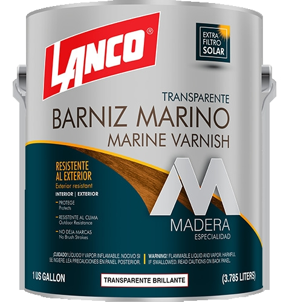

Barniz para madera

Producto de acabado que forma una película protectora y permite conservar visible la veta de la madera. Existen versiones para interiores y exteriores, con diferentes niveles de brillo y resistencia.